the pipeline
Project 01 — Action Hero example
Ask for a collection of high quality reference images downloaded from the open web, ranked for visual quality, then image-edited with ComfyUI, then run through i2v with local MiniMax H3, all managed by local Hermes Agent — uncensored video creation.
Five heroines, one miniature bar, one continuous cut with 12-frame dissolves. Produced end-to-end by the pipeline below and posted to YouTube.
Everything starts with a subject you name — it sets the search queries, the single biggest quality lever in the pipeline. Specific beats vague. This run's topic: Famous Hollywood female action heroes.
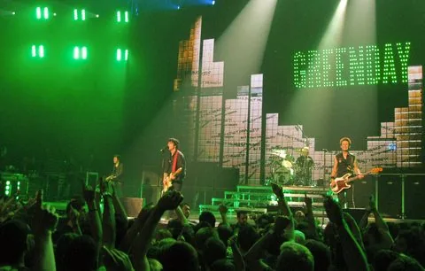
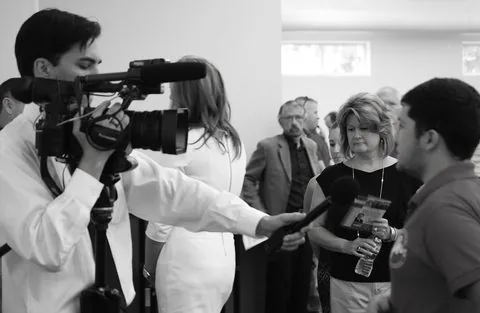
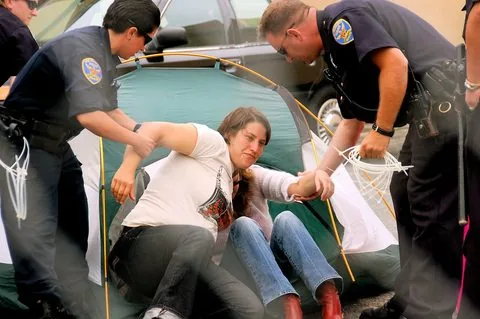
DuckDuckGo, Bing, Openverse, Wikimedia. No API keys. Naming specific subjects in the queries matters more than any filter downstream.
Verifies each file, drops near-duplicates, and writes a sidecar per image — source page, title, alt text, caption, licence, EXIF.
Hermes downloads and quality-ranks about 50–100 images — as many as you request. Sharpness, resolution, contrast, clipping. Collages and catalog pages are rejected outright — one character only. Builds the contact sheet so the curator can pick their favorite 5–10 images to keep working on.
The score measures sharpness and resolution. It knows nothing about whether the pose, era or framing is right — and everything downstream inherits this choice. On this run the pick was cand_018 (Lara Croft), with four backups kept.
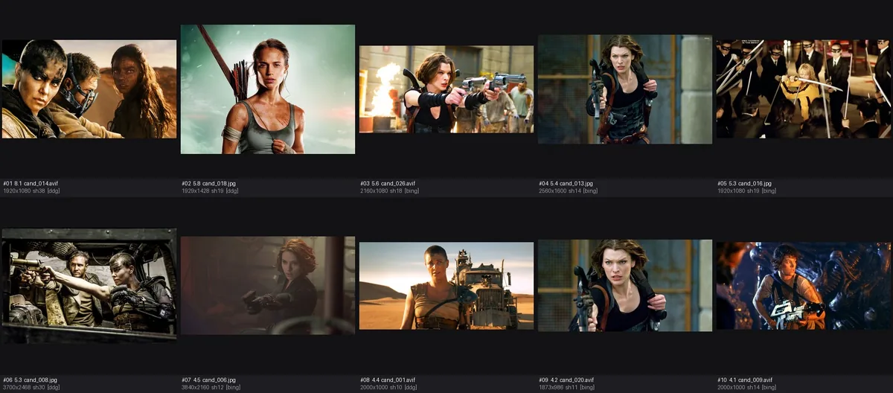
A vision pass fills subject, work, year, creator, wardrobe, props, setting. Pages mislabel images constantly, so the picture beats the metadata — and it flags the conflict when they disagree.
Step 04's vision pass fills in who this is — the subject, the film
or show they're from, their wardrobe, their props. That summary drives both
the composite and the video prompt, so a wrong identification poisons
everything downstream. You are the second set of eyes: does the summary
match the picture? Web pages mislabel images constantly — on this run the
page said "Furiosa / Mad Max: Fury Road" but the picture was clearly
Lara Croft. If the summary is wrong, fix it by hand in one command, no
vision re-run:
step 4 --via harvest --set subject="…"
Before the composite runs, you decide what image edit to do. This run: drop the character into a chosen environment — our miniature bar scene.
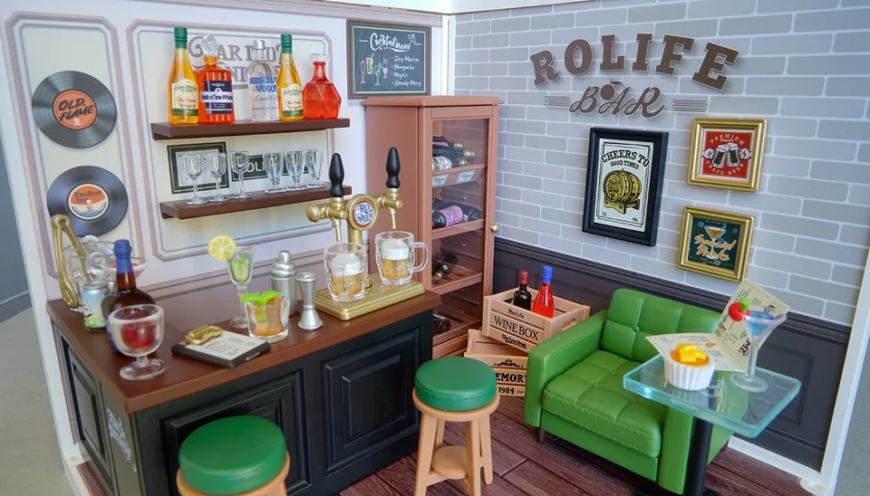
Anything else is fair game: the character as a cartoon, standing with another character, restyled to a completely different era — any image-edit workflow you want (Qwen-Edit, Kontext-Edit, anything) to produce a cool, good-looking initial image that we later turn into videos.
Qwen-Image-Edit 2511 places the subject into the plate. The instruction templates against the identified fields, so it can name the wardrobe and props.
Does the subject read clearly, is the lighting plausible, is the scale right? This
frame drives the entire video — it's the expensive commitment. Iterate with
reject 5 --note and a new seed; the recipe below is what
makes these passes consistent.
The stage for every hero is a real miniature: the Rolife Leisurely Cheers Bar Super Creator Miniature House (DW012) — a hand-assembled prefab kit, about 16cm cubed. Photographed once, then reused as the conditioning plate for every composite and every video.
Five action heroines composited into the miniature bar at the locked recipe.
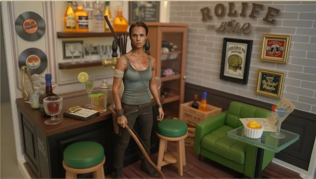
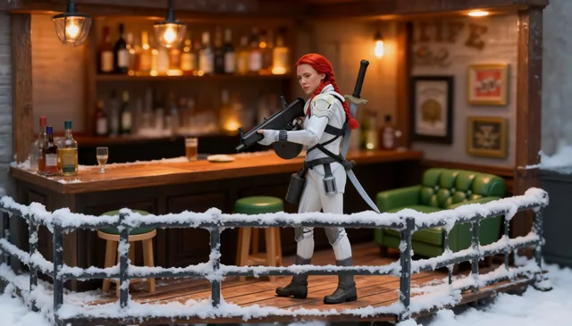
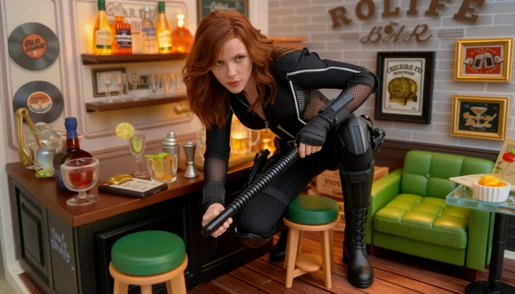
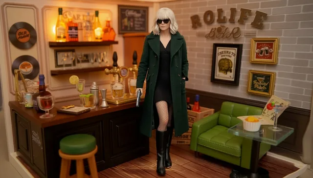
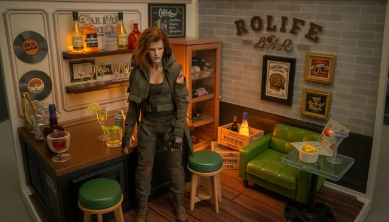
Structure-validated against the local MiniMax H3 form — look paragraph,
SHOT n: blocks, an Audio: line.
Bracket syntax and the API schema are auto-rejected.
MiniMax H3 running locally on your GPU. Picture and sound generated together, so the clip lands with audio already on it. Minutes, not seconds.
The subject is the only thing that changes between runs — everything from the queries to the video prompt follows the topic you pick. A few directions the same toolkit would hunt for:
cand_007.jpg landed at
5760×3840, others at 3840×2160).plate_minibar_1344x768.png) go in together, with
the workflow's FluxKontextImageScale node
bypassed.edit/, the working copies
feed MiniMax H3 ref2v.image0 = the composite
(scene placement, 1904×1088) and image1 = the
actress identity anchor (face fidelity, 1904×1088), with
ref_image_size: max. Output: 1344×768,
243 frames @ 24fps, native audio.Every approved image and every video has a sidecar text file saved beside it — the exact prompt that produced it plus the important context. Here are the two prompts for each of the five heroes: the Qwen-Image-Edit instruction that built the composite, and the MiniMax H3 ref2v prompt that animated it (the exact files used for the chosen reel). Click a reader to see the full verbatim text.
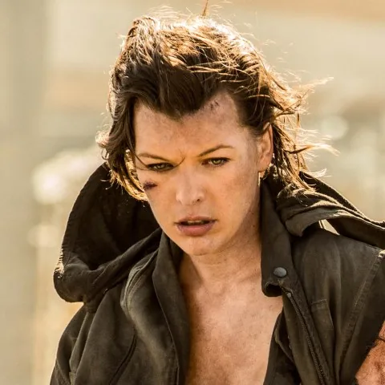
raw/cand_007_v04_1904x1088.png.txt 2 KB# cand_007_v03_5760x3291.png ## Provenance query : Furiosa Mad Max Fury Road movie still source : ddg page_title : Mad Max Director Teases New Furiosa Story Set After Fury Road page_url : https://movieweb.com/mad-max-new-furiosa-story-after-fury-road/ image_url : https://static1.moviewebimages.com/wordpress/wp-content/uploads/2024/05/furiosa-mad-max-fury-road.jpg og_title : Mad Max Director Teases New Furiosa Story Set After Fury Road og_description : George Miller teases another Furiosa film, set after Fury Road, exploring the character's time as a leader. meta_description : George Miller teases another Furiosa film, set after Fury Road, exploring the character's time as a leader. alt_text : Imperator Furiosa in Fury Road and the prequel, Furiosa: A Mad Max Saga. ## Description subject : a woman with tousled reddish-brown shoulder-length hair, dirt-smudged fair skin, wearing a ragged olive-drab tactical vest over a dark tank top subject_type : person subject_identity : Milla Jovovich as Alice work : Resident Evil: The Final Chapter work_type : film year : 2016 creator : Paul W.S. Anderson scene : Alice walking cautiously through a sunlit, ruined industrial interior, alert and scanning ahead action : walking forward, gaze fixed intently off to the side, mouth slightly open as if breathing hard or about to speak wardrobe : tattered olive-drab canvas vest/jacket with a hood, torn sleeve exposing a bloodied shoulder, dark tank top underneath, tactical belt with buckles, fingerless gloves, small American flag patch on the sleeve props : none clearly visible in hands setting : derelict industrial building or warehouse with concrete support beams and large glassless window openings, hazy bright daylight streaming in lighting : strong warm backlight/sunlight through the windows creating haze and lens flare, subject lit softer and slightly underexposed against the bright background palette : muted olive, khaki, and brown tones against a warm, hazy off-white/beige background camera : medium shot, slightly low angle, shallow depth of field with background thrown out of focus confidence : high notes : The source page mislabels this as Furiosa/Mad Max: Fury Road, but the face, costume (American flag patch, tactical vest), and setting match Milla Jovovich's Alice from the Resident Evil film series, most likely Resident Evil: The Final Chapter given the wardrobe style.
prompts/cand_007_v02_vid03_ref.txt 6 KBsubject_definitions: <Subject 1> is Alice, played by Milla Jovovich in the Resident Evil film series (specifically Resident Evil: The Final Chapter, 2016), whose appearance and identity come from <Picture 2> and whose scene placement comes from <Picture 1>, with her recognisable Ukrainian-Russian facial features, high cheekbones, wide-set grey-green eyes, strong jawline, full lips, brunette hair combed back on both sides with shorter layers, a tattered green army jacket with a United States flag patch on the left sleeve over a navy blue cropped tank top, black denim jeans, black lace-up combat boots, black fingerless padded gloves, front-laced shoulder holster straps across her chest, and a suppressed SIG Sauer handgun held low at her side. <Subject 2> is the miniature bar environment in <Picture 1>, a warmly lit interior with amber bottles, brass beer taps, a dark wood counter, a green tufted armchair, a glass side table, and a glowing "ROLIFE BAR" sign on the brick wall. <Picture 1> is the first frame of [Shot 1], showing <Subject 1> already standing in <Subject 2>. <Picture 2> is the identity anchor for <Subject 1>, an original film still of Milla Jovovich as Alice from Resident Evil: The Final Chapter, defining her exact facial features, bone structure, brunette hair, combat-worn complexion, and layered costume described above. The actress's face from <Picture 2> must remain locked onto the character throughout every shot of the video — her specific high cheekbones, wide eyes, and strong jawline must be recognisable in every camera angle. summary: [keyframe completion + reference generation] The target video begins from <Picture 1>, showing Milla Jovovich as Alice from the Resident Evil film series standing armed in the miniature bar, and uses <Picture 2> to lock her facial identity in every frame. She clears the room with her suppressed handgun through four quick cuts with jump cuts and muzzle flash, shouting her name and a throwaway one-liner, and ends on a tense aim over the counter. retention_analysis: <Subject 1> (appears in [Shot 1], [Shot 2], [Shot 3], [Shot 4]): fully_preserved - Alice's identity as played by Milla Jovovich, her exact facial features and bone structure from <Picture 2>, her green army jacket with US flag patch, navy crop top, black denim jeans, combat boots, fingerless gloves, shoulder holster straps, and suppressed SIG Sauer handgun are all retained without drifting. <Subject 2> (appears in [Shot 1], [Shot 2], [Shot 3], [Shot 4]): fully_preserved - the miniature bar's amber bottles, brass taps, wood counter, green armchair, and "ROLIFE BAR" sign are retained. <Picture 1> ([Shot 1] first frame): fully_preserved - the shot opens exactly on the composited still, with Alice's position, pose, and the bar layout intact. <Picture 2> (identity anchor for <Subject 1>): fully_preserved - Milla Jovovich's distinctive Ukrainian-Russian facial features, high cheekbones, wide grey-green eyes, strong jawline, and brunette hair are carried into every shot without drifting, in every camera angle and under every lighting change. detailed_description: The target video is in a live-action, cinematic action-movie style with warm practical lighting and slight film grain, matching the gritty post-apocalyptic feel of the Resient Evil series. [Shot 1] The shot begins from <Picture 1>: a medium shot frames <Subject 1>, Milla Jovovich as Alice, with her distinctive high cheekbones, wide grey-green eyes, strong jawline, and brunette hair combed back, standing behind the dark wood counter of <Subject 2>, the miniature bar with its brass taps, stacked amber bottles, green tufted armchair, and the glowing "ROLIFE BAR" sign on the brick wall. Her face matches <Picture 2> exactly — the same determined, battle-hardened expression from the films. She raises her suppressed SIG Sauer handgun into a two-handed grip, scans the room with quick, deliberate head movements, and the battle-weary woman with a fierce, rasping voice (S1) shouts: <d>[English] I am Alice, from Resident Evil!</d> The camera holds a static shot with small amplitude as dust motes drift in the warm amber bar light. [Shot 2] At 00:02.500, the camera cuts to a wide pull-out with large amplitude at fast speed, revealing the full miniature bar interior as <Subject 1> steps out from behind the counter, her green army jacket swinging open, gun still raised, sweeping the room. Her face remains clearly that of Milla Jovovich from <Picture 2>, her high cheekbones and strong jaw visible even in motion. Muzzle flash strobes bright as she fires two suppressed shots off the left edge of frame; spent brass spins through the air and a row of amber bottles bursts in a spray of glass and liquid, smoke curling through the warm light. [Shot 3] At 00:05.000, the camera cuts to a low-angle shot behind the stools as <Subject 1> drops to one knee behind the nearest stool, her layered brunette hair swinging forward, and levels the pistol across its seat cushion, her shoulder holster straps visible across the tank top. The camera trucks left with medium amplitude at normal speed, sliding past the green armchair, as she fires again — muzzle flash illuminating the drifting gunsmoke, glass shattering across the back bar, and a knocked-over lamp spilling a tongue of flame across a pool of liquor. In the close framing her facial features match <Picture 2> exactly: the wide grey-green eyes, strong jawline, and full lips of Milla Jovovich. [Shot 4] At 00:07.500, the camera cuts to a close side profile of <Subject 1>'s face and shoulders as she steadies her aim toward the darkened corner of the bar, a practised tactical breath, her fingerless gloved hand on the trigger, and the battle-weary woman (S1) growls: <d>[English] This place ain't big enough for the both of us.</d> The camera arcs around her with small amplitude at slow speed, ending on a tight over-the-shoulder shot down her gun sights, flame and smoke filling the background. Her distinctive face — Milla Jovovich's high cheekbones, wide-set eyes, and strong jaw — remains unmistakable to the final frame. overall_soundscape: Her combat boots scuff across the wooden floorboards with each pivot and drop. Suppressed SIG Sauer shots crack with sharp muzzle reports, spent brass clinks across the floor, glass shatters in wet bursts, and liquor-fed flame crackles low in the background. The leather of her shoulder holster and gloves creaks with each movement. Low room ambience continues underneath throughout. non_diegetic_music: Low, sustained strings at a slow tempo with a deep brass pulse and a driving percussive heartbeat, increasing in volume and pace through the cuts, with a staccato drum fill locked to the gunfire and cutting out abruptly at her one-liner, holding a tense silence on the final aim.
raw/cand_012_v04_1904x1088.png.txt 2 KB# cand_012_v03_3000x1714.png ## Provenance query : Furiosa Mad Max Fury Road movie still source : ddg page_title : Mad Max Director Teases New Furiosa Story Set After Fury Road page_url : https://movieweb.com/mad-max-new-furiosa-story-after-fury-road/ image_url : https://static1.moviewebimages.com/wordpress/wp-content/uploads/2024/05/furiosa-mad-max-fury-road.jpg og_title : Mad Max Director Teases New Furiosa Story Set After Fury Road og_description : George Miller teases another Furiosa film, set after Fury Road, exploring the character's time as a leader. meta_description : George Miller teases another Furiosa film, set after Fury Road, exploring the character's time as a leader. alt_text : Imperator Furiosa in Fury Road and the prequel, Furiosa: A Mad Max Saga. ## Description subject : a woman with wavy auburn hair crouching low in a black tactical suit, gripping a collapsible baton subject_type : person subject_identity : Natasha Romanoff / Black Widow (Scarlett Johansson) work_type : film creator : Marvel Studios scene : Black Widow crouched in a combat-ready stance on a light grey concrete surface, alert and watching something off-frame. action : crouching low with one hand braced on the ground, the other hand gripping a black collapsible baton across her knee wardrobe : black form-fitting tactical suit with zippered panels and mesh underarm inserts, black tactical glove on the right hand, black knee-high boots with reinforced knee guards, black leg holster straps props : a black collapsible baton/stun stick, holster rig on the thigh setting : an open concrete-paved area, possibly a rooftop or plaza, plain light grey ground with expansion joint lines lighting : soft, even overcast daylight, low contrast, diffused palette : muted grey concrete background against black suit and warm auburn hair camera : medium-close, high angle looking down at the subject, slightly tilted confidence : medium notes : The source page/query labels this as Furiosa from Mad Max: Fury Road, but the image clearly shows Scarlett Johansson as Black Widow in her black tactical suit with a baton, not Furiosa. This appears to be a promotional still, likely from Captain America: Civil War (2016) based on the suit design and hair style, but exact film/year not confirmed.
prompts/cand_012_v04_vid04_ref.txt 6 KBsubject_definitions: <Subject 1> is Natasha Romanoff, played by Scarlett Johansson as Black Widow in the Marvel Cinematic Universe films (The Avengers, Iron Man 2, Captain America: The Winter Soldier), whose appearance and identity come from <Picture 2> and whose scene placement comes from <Picture 1>, with her recognisable facial features, high cheekbones, large blue-green eyes, rounded face with a defined jawline, shoulder-length strawberry blonde hair worn in a swept side part, a fitted black tactical bodysuit with a high Mandarin collar, gold zippered front panel, black straps across the chest and arms, black leather gloves with reinforced knuckles, gold wrist-mounted Widow's Bite gauntlets, a red hourglass emblem on the chest, a wide black belt with gold buckle, and twin black collapsible batons (Elektrastun batons) holstered at each thigh. <Subject 2> is the miniature bar environment in <Picture 1>, a warmly lit interior with amber bottles, brass beer taps, a dark wood counter, a green tufted armchair, a glass side table, and a glowing "ROLIFE BAR" sign on the brick wall. <Picture 1> is the first frame of [Shot 1], showing <Subject 1> already standing in <Subject 2>. <Picture 2> is the identity anchor for <Subject 1>, an original film still of Scarlett Johansson as Natasha Romanoff / Black Widow, defining her exact facial features, bone structure, strawberry blonde hair, and the black tactical bodysuit with gold accents described above. The actress's face from <Picture 2> must remain locked onto the character throughout every shot of the video — her distinctive high cheekbones, large blue-green eyes, and rounded facial structure with defined jawline must be recognisable in every camera angle. summary: [keyframe completion + reference generation] The target video begins from <Picture 1>, showing Scarlett Johansson as Black Widow / Natasha Romanoff from the Marvel Cinematic Universe standing in the miniature bar, and uses <Picture 2> to lock her facial identity in every frame. She clears the room with her collapsible batons through four quick cuts with jump cuts and combat movement, delivering a tough one-liner, and ends on a tense final pose. retention_analysis: <Subject 1> (appears in [Shot 1], [Shot 2], [Shot 3], [Shot 4]): fully_preserved - Black Widow's identity as played by Scarlett Johansson, her exact facial features and bone structure from <Picture 2>, her strawberry blonde side-swept hair, fitted black tactical bodysuit with high Mandarin collar, gold front zipper, red hourglass emblem, gold Widow's Bite wrist gauntlets, black gloves, and twin collapsible batons are all retained without drifting. <Subject 2> (appears in [Shot 1], [Shot 2], [Shot 3], [Shot 4]): fully_preserved - the miniature bar's amber bottles, brass taps, wood counter, green armchair, and "ROLIFE BAR" sign are retained. <Picture 1> ([Shot 1] first frame): fully_preserved - the shot opens exactly on the composited still, with Black Widow's position, pose, and the bar layout intact. <Picture 2> (identity anchor for <Subject 1>): fully_preserved - Scarlett Johansson's distinctive high cheekbones, large blue-green eyes, rounded face with defined jawline, and strawberry blonde hair are carried into every shot without drifting, in every camera angle and under every lighting change. detailed_description: The target video is in a live-action, cinematic superhero-action style with warm practical lighting and slight film grain. [Shot 1] The shot begins from <Picture 1>: a medium shot frames <Subject 1>, Scarlett Johansson as Natasha Romanoff, Black Widow, with her distinctive high cheekbones, large blue-green eyes, rounded face, defined jawline, and strawberry blonde hair in a swept side part, standing behind the dark wood counter of <Subject 2>, the miniature bar with its brass taps, stacked amber bottles, green tufted armchair, and the glowing "ROLIFE BAR" sign on the brick wall. Her face matches <Picture 2> exactly — the same expression of cold tactical assessment from the Marvel films. She extends both electrified batons with a sharp crackle and blue arc of electricity to full length with a sharp metallic click, gold Widow's Bite gauntlets glinting in the amber light, and drops into a low combat crouch. The battle-tested former KGB agent with a steady, mocking voice (S1) says: <d>[English] Natasha Romanoff. You know who I am.</d> The camera holds a static shot with small amplitude. [Shot 2] At 00:03.000, the camera cuts to a wide pull-out with large amplitude at fast speed, revealing the full miniature bar interior as <Subject 1> vaults over the counter in a smooth tactical roll, her black bodysuit's gold zipper catching the light, batons spinning, landing in a crouch between the stools. Her face remains clearly that of Scarlett Johansson from <Picture 2> — the high cheekbones and blue-green eyes visible even in motion. The red hourglass emblem on her chest is clearly visible as she lands. [Shot 3] At 00:06.000, the camera cuts to a low-angle shot through the legs of the bar stools as <Subject 1> springs up from her crouch and sweeps a baton in a wide arc, cracking a bottle off the back bar with a shower of sparks as the electrified baton clips the brass taps. The camera trucks left with medium amplitude at normal speed as glass shatters in a spray and amber liquid splashes across the floorboards. In the close framing her facial features match <Picture 2> exactly: Scarlett Johansson's rounded face with high cheekbones, defined jawline, and blue-green eyes clearly visible. [Shot 4] At 00:09.000, the camera cuts to a close side profile of <Subject 1>'s face and shoulders as she holds both batons crossed in an X guard, the gold gauntlets glowing, her strawberry blonde hair sweeping across her cheek, gold Widow's Bite gauntlet beside her face, and the battle-tested operative (S1) adds: <d>[English] Trust me, this is the fun part.</d> The camera arcs around her with small amplitude at slow speed, ending on an over-the-shoulder shot down the bar toward the doorway. Her unmistakable face — Scarlett Johansson's high cheekbones, blue-green eyes, and swept strawberry blonde hair — remain clear to the final frame. overall_soundscape: Her boots thud on the wooden floorboards as she lands from the vault. Batons snap open with sharp metallic clicks, glass shatters in a wet spray, and sparks crackle against the brass taps. Her tactical bodysuit creaks as the Widow's Bite gauntlets hum with stored energy with each precise movement. Low room ambience continues underneath throughout. non_diegetic_music: Pulsing electronic action beat with driving percussion and low brass stabs, increasing in intensity through the cuts and cutting out abruptly at her one-liner, holding a tense silence before the final arc shot.
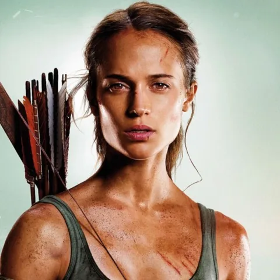
raw/cand_018_v04_1904x1088.png.txt 2 KB# cand_018.jpg ## Provenance query : Furiosa Mad Max Fury Road movie still source : ddg page_title : Mad Max Director Teases New Furiosa Story Set After Fury Road page_url : https://movieweb.com/mad-max-new-furiosa-story-after-fury-road/ image_url : https://static1.moviewebimages.com/wordpress/wp-content/uploads/2024/05/furiosa-mad-max-fury-road.jpg og_title : Mad Max Director Teases New Furiosa Story Set After Fury Road og_description : George Miller teases another Furiosa film, set after Fury Road, exploring the character's time as a leader. meta_description : George Miller teases another Furiosa film, set after Fury Road, exploring the character's time as a leader. alt_text : Imperator Furiosa in Fury Road and the prequel, Furiosa: A Mad Max Saga. ## Description subject : a lean, athletic young woman with dirt-smudged skin, damp tousled brown hair pulled back, and a bow and arrows slung across her back subject_type : person subject_identity : Lara Croft, played by Alicia Vikander work : Tomb Raider work_type : film year : 2018 creator : Roar Uthaug scene : A promotional character portrait of Lara Croft, battered and dirt-streaked after surviving ordeals on the island, gazing steadily at the camera. action : Standing still, looking directly at the camera with a determined, weary expression, one hand lightly gripping the bowstring across her chest wardrobe : Sleeveless grey-green tank top, cloth/bandage wrap around the upper arm, dirt and sweat smudged across skin props : A wooden longbow and a quiver of fletched arrows slung over her shoulder setting : Neutral studio backdrop with a stormy greenish sky and clouds composited behind her lighting : Soft frontal key light with a glowing rim, moody teal-green ambient tone palette : Muted greens, tan skin tones, warm brown wood and feather accents camera : Medium close-up, slightly low angle, straight-on portrait framing confidence : high notes : The supplied caption (Furiosa / Mad Max: Fury Road) does not match the image at all -- this is clearly a promotional still of Alicia Vikander as Lara Croft from the 2018 Tomb Raider film, identifiable by her face, the bow and quiver, and the tank top/bandage costume. Trusting the picture over the mislabeled source text.
prompts/cand_018_v10b_vid04_ref.txt 6 KBsubject_definitions: <Subject 1> is Lara Croft, played by Alicia Vikander in Tomb Raider (2018), whose appearance and identity come from <Picture 2> and whose scene placement comes from <Picture 1>, with her recognisable Scandinavian facial features (Alicia Vikander is Swedish), high cheekbones, defined jawline, almond-shaped hazel eyes, naturally arched eyebrows, small upturned nose, light freckles across the nose and cheeks, dark brown hair tied back in a simple ponytail with shorter face-framing layers, a light stone-coloured sleeveless square-neck tank top (taupe/stone Hanro tank), a cloth bandage wrap on her left upper arm and another visible at her left knee, a wooden recurve bow with knurled grip in her hands, a leather quiver of arrows strapped across her back, slim-fit beige cargo trousers, brown leather work boots with ankle support, and a heavy brass compass on a leather cord visible around her neck, with dirt smudged across her skin from temple raiding. <Subject 2> is the miniature bar environment in <Picture 1>, a warmly lit interior with amber bottles, brass beer taps, a dark wood counter, a green tufted armchair, a glass side table, and a glowing "ROLIFE BAR" sign on the brick wall. <Picture 1> is the first frame of [Shot 1], showing <Subject 1> already standing in <Subject 2>. <Picture 2> is the identity anchor for <Subject 1>, an original film still of Alicia Vikander as Lara Croft, Tomb Raider (2018), defining her exact facial features, bone structure, dark hair, and survivalist costume described above. The actress's face from <Picture 2> must remain locked onto the character throughout every shot of the video — her distinctive high cheekbones, almond hazel eyes, tiny nose, and freckled complexion must be recognisable in every camera angle. summary: [keyframe completion + reference generation] The target video begins from <Picture 1>, showing Alicia Vikander as Lara Croft, Tomb Raider (2018) standing in the miniature bar, and uses <Picture 2> to lock her facial identity in every frame. She clears the room with her recurve bow through four quick cuts with jump cuts and arrow impacts, announcing her name and film, and ends on a tense final release. retention_analysis: <Subject 1> (appears in [Shot 1], [Shot 2], [Shot 3], [Shot 4]): fully_preserved - Lara Croft's identity as played by Alicia Vikander, her exact facial features and bone structure from <Picture 2>, her dark brown tied-back hair, light square-neck tank top, arm and knee bandages, leather quiver, recurve bow with knurled grip, beige cargo trousers, leather boots, compass necklace, and dirt-smudged skin are all retained without drifting. <Subject 2> (appears in [Shot 1], [Shot 2], [Shot 3], [Shot 4]): fully_preserved - the miniature bar's amber bottles, brass taps, wood counter, green armchair, and "ROLIFE BAR" sign are retained. <Picture 1> ([Shot 1] first frame): fully_preserved - the shot opens exactly on the composited still, with Lara's position, pose, and the bar layout intact. <Picture 2> (identity anchor for <Subject 1>): fully_preserved - Alicia Vikander's distinctive Swedish facial features, high cheekbones, almond hazel eyes, small upturned nose, light freckles, and dark brown hair are carried into every shot without drifting, in every camera angle and under every lighting change. detailed_description: The target video is in a live-action, cinematic survival-action style with warm practical lighting and slight film grain, matching the grounded realism of the 2018 Tomb Raider film. [Shot 1] The shot begins from <Picture 1>: a medium shot frames <Subject 1>, Alicia Vikander as Lara Croft, Tomb Raider, with her distinctive high cheekbones, almond-shaped hazel eyes, small upturned nose, and light freckles visible across her nose and cheeks, standing behind the dark wood counter of <Subject 2>, the miniature bar with its brass taps, stacked amber bottles, green tufted armchair, and the glowing "ROLIFE BAR" sign on the brick wall. Her face matches <Picture 2> exactly — the same wary, determined expression from the film. She nocks an arrow from the leather quiver strapped across her back, draws the bowstring to her cheek — the compass pendant on its cord visible at her neck — sights down the bar, and the weathered survivor with a calm, low voice (S1) says: <d>[English] Lara Croft. Tomb Raider. I don't miss.</d> The camera holds a static shot with small amplitude. [Shot 2] At 00:03.000, the camera cuts to a wide pull-out with large amplitude at fast speed, revealing the full miniature bar interior as <Subject 1> vaults onto the countertop with a gymnast's agility in a low crouch, her leather quiver shifting, bow held low, an arrow already nocked, scanning the room like a huntress. Her face remains clearly that of Alicia Vikander from <Picture 2> — the high cheekbones, almond eyes, and freckled complexion visible even as she moves. [Shot 3] At 00:06.000, the camera cuts to a low-angle shot behind the stools as <Subject 1> draws the bowstring to full tension, the knurled grip of the bow solid in her hand, and releases — the arrow cuts across the room and strikes a stacked row of bottles, which burst in a cascade of glass, amber liquid and a brief tongue of flame from a knocked-over lamp. The camera trucks right with medium amplitude at normal speed as smoke drifts through the shot. In the close framing her facial features match <Picture 2> exactly: the high cheekbones, hazel almond-shaped eyes, small nose, and light freckles of Alicia Vikander. [Shot 4] At 00:09.000, the camera cuts to a close side profile of <Subject 1>'s face and shoulders as she already has a third arrow already nocked, a full combat load ready, the bowstring taut beside her cheek, and the weathered survivor (S1) adds: <d>[English] Nice try.</d> The camera pushes in with small amplitude at slow speed as she releases the second arrow and it cuts offscreen with a sharp whistle. Her face remains unmistakably that of Alicia Vikander — the defined cheekbone, dark swept hair, almond eye, and freckled complexion clear to the final frame. overall_soundscape: Her leather boots shift on the wooden countertop, the bowstring creaks and groans as she draws, and each arrow cuts the air with a sharp whistle at release. Glass bottles burst with a bright crash, liquid splashes, and a low crackle of flame rises from the knocked-over lamp. The leather of her quiver creaks with each movement. Low room ambience continues underneath throughout. non_diegetic_music: Low, brooding orchestral strings at a moderate tempo with a tribal drum pulse, building through the draw and cutting sharply at each arrow release, with a rising swell as the bottles burst and a tense hold as she nocks the second arrow.
raw/cand_019_v04_1904x1088.png.txt 2 KB# cand_019_v03_3780x2160.png ## Provenance query : Furiosa Mad Max Fury Road movie still source : ddg page_title : Mad Max Director Teases New Furiosa Story Set After Fury Road page_url : https://movieweb.com/mad-max-new-furiosa-story-after-fury-road/ image_url : https://static1.moviewebimages.com/wordpress/wp-content/uploads/2024/05/furiosa-mad-max-fury-road.jpg og_title : Mad Max Director Teases New Furiosa Story Set After Fury Road og_description : George Miller teases another Furiosa film, set after Fury Road, exploring the character's time as a leader. meta_description : George Miller teases another Furiosa film, set after Fury Road, exploring the character's time as a leader. alt_text : Imperator Furiosa in Fury Road and the prequel, Furiosa: A Mad Max Saga. ## Description subject : a red-haired woman with braided hair wielding a rifle, wearing a white tactical combat suit with armored shoulder pauldron and a sword sheathed on her back subject_type : person subject_identity : Natasha Romanoff / Black Widow (Scarlett Johansson) work : Black Widow work_type : film year : 2021 creator : Cate Shortland (director), Marvel Studios scene : Natasha Romanoff aims a rifle while standing on a snowy metal gantry during the film's third-act assault on the Red Room facility. action : aiming a submachine gun/rifle forward and slightly downward, gripping the barrel with a wrapped/bandaged hand wardrobe : white and light-grey segmented tactical combat suit with an armored white shoulder pauldron, fingerless tactical gloves, a strapped harness across the chest props : a suppressed automatic rifle with a drum magazine, a sword sheathed on her back, a snow-covered metal railing/scaffold in the foreground setting : outdoors on an icy, snow-dusted metal structure (railing/gantry) against a clear pale blue sky lighting : bright, hard daylight from upper left, strong highlights on hair and suit, clear sharp shadows palette : pale blue sky, white/off-white suit, copper-red hair, rust-orange metal railing, muted grey gunmetal camera : medium shot, low angle looking slightly up at the subject confidence : high notes : The search metadata labels this as Furiosa from Mad Max: Fury Road, but the image clearly shows Scarlett Johansson as Black Widow in her white snow-assault suit from the 2021 Marvel film Black Widow -- trusting the picture over the mislabeled query/alt text.
prompts/cand_019_v02_vid03_ref.txt 6 KBsubject_definitions: <Subject 1> is Natasha Romanoff, played by Scarlett Johansson as Black Widow in Black Widow (2021), whose appearance and identity come from <Picture 2> and whose scene placement comes from <Picture 1>, with her recognisable facial features, high cheekbones, large blue-green eyes, rounded face with a defined jawline, shoulder-length strawberry blonde hair in a swept side part, a white tactical snow-assault suit with a high mandarin collar, rubber-textured scuba-suit fabric panels, black armored inserts on the shoulders, thighs and forearms, black straps across the chest and waist, a black tactical webbing belt, black gloves with reinforced knuckles, black combat boots, a suppressed automatic rifle with a folding stock held in a two-handed grip, and the red hourglass emblem on the white chest panel. <Subject 2> is the miniature bar environment in <Picture 1>, a warmly lit interior with amber bottles, brass beer taps, a dark wood counter, a green tufted armchair, a glass side table, and a glowing "ROLIFE BAR" sign on the brick wall. <Picture 1> is the first frame of [Shot 1], showing <Subject 1> already standing in <Subject 2>. <Picture 2> is the identity anchor for <Subject 1>, an original film still of Scarlett Johansson as Black Widow in the white snow-assault suit from Black Widow (2021), defining her exact facial features, bone structure, strawberry blonde hair, and white tactical gear described above. The actress's face from <Picture 2> must remain locked onto the character throughout every shot of the video — her distinctive high cheekbones, large blue-green eyes, and rounded facial structure must be recognisable in every camera angle. summary: [keyframe completion + reference generation] The target video begins from <Picture 1>, showing Scarlett Johansson as Natasha Romanoff, Black Widow from the 2021 film, standing in the miniature bar, and uses <Picture 2> to lock her facial identity in every frame. She clears the room with her suppressed rifle through four quick cuts with jump cuts and roaring gunfire, announcing her name and film, and ends on a tense final aim. retention_analysis: <Subject 1> (appears in [Shot 1], [Shot 2], [Shot 3], [Shot 4]): fully_preserved - Black Widow's identity as played by Scarlett Johansson, her exact facial features and bone structure from <Picture 2>, her strawberry blonde swept hair, white snow-assault suit with rubber-textured fabric panels and scuba-suit construction, black armored inserts on thighs and forearms, black straps, tactical belt, black gloves, suppressed automatic rifle with folding stock, and red hourglass emblem on the white chest are all retained without drifting. <Subject 2> (appears in [Shot 1], [Shot 2], [Shot 3], [Shot 4]): fully_preserved - the miniature bar's amber bottles, brass taps, wood counter, green armchair, and "ROLIFE BAR" sign are retained. <Picture 1> ([Shot 1] first frame): fully_preserved - the shot opens exactly on the composited still, with Black Widow's position, pose, and the bar layout intact. <Picture 2> (identity anchor for <Subject 1>): fully_preserved - Scarlett Johansson's distinctive high cheekbones, large blue-green eyes, rounded face with defined jawline, and strawberry blonde hair are carried into every shot without drifting, in every camera angle and under every lighting change. detailed_description: The target video is in a live-action, cinematic spy-thriller action style with warm practical lighting and slight film grain, matching the tone of the Black Widow (2021) film. [Shot 1] The shot begins from <Picture 1>: a medium shot frames <Subject 1>, Scarlett Johansson as Natasha Romanoff, Black Widow from the film Black Widow, with her distinctive high cheekbones, large blue-green eyes, rounded face with a defined jawline, and strawberry blonde hair in a swept side part, standing behind the dark wood counter of <Subject 2>, the miniature bar with its brass taps, stacked amber bottles, green tufted armchair, and the glowing "ROLIFE BAR" sign on the brick wall. Her face matches <Picture 2> exactly — the same focused, analytical expression from the film. She shoulders the suppressed automatic rifle with its folding stock, the white scuba-textured suit creasing at the elbows, the red hourglass emblem visible on her chest as she sweeps the room in one fluid motion. The cold-voiced operative with a dry, amused tone (S1) says: <d>[English] I am Natasha Romanoff, Black Widow.</d> The camera holds a static shot with small amplitude. [Shot 2] At 00:02.500, the camera cuts to a wide pull-out with large amplitude at fast speed, revealing the full miniature bar interior as <Subject 1> vaults the counter in a tight roll, the white suit flaring, the folding stock of the rifle snapping into position as she brings it up to her shoulder landing. Her face remains clearly that of Scarlett Johansson from <Picture 2> — the high cheekbones and blue-green eyes visible even in the fast movement. Muzzle flash strobes bright as she opens fire off the left edge of frame; spent brass spins through the air and a row of amber bottles bursts in a spray of glass and liquid, smoke curling through the warm light. [Shot 3] At 00:05.000, the camera cuts to a low-angle shot through the legs of the bar stools as <Subject 1> drops to one knee, the white suit's rubber-textured panels catching the bar's amber glow, and opens fire, sweeping the line of fire across the bar — the suppressor flashes bright, spent brass cartridges arc through the air, bottles across the back bar shatter in bursts, and thick gunsmoke curls through the amber light. The camera pans right with medium amplitude at normal speed. In the close framing her facial features match <Picture 2> exactly: the high cheekbones, blue-green eyes, and swept strawberry blonde hair of Scarlett Johansson. [Shot 4] At 00:07.500, the camera cuts to a close side profile of <Subject 1>'s face and shoulders as she steadies her aim in the drifting smoke, the folding stock pressed to her shoulder, the red hourglass emblem on the white suit visible below her face, and the cold-voiced operative (S1) adds: <d>[English] Night, night.</d> The camera arcs around her with small amplitude at slow speed, ending on an over-the-shoulder shot down the rifle sights. Her face remains unmistakably that of Scarlett Johansson — the defined high cheekbone, blue-green eye, and swept strawberry blonde hair clear to the final frame. overall_soundscape: Her boots crunch on the wooden floorboards as she lands from the vault. The suppressed rifle barks with sharp muzzle reports, spent brass clinks across the floor, glass shatters in bursts, and gunsmoke hisses in the air. The white scuba-textured tactical suit creaks with each precise movement. Low room ambience continues underneath throughout. non_diegetic_music: Tense, low synth drone with a slow heartbeat pulse and distant percussion, swelling through the cuts, with a staccato drum fill locked to the gunfire and dropping out abruptly at her one-liner, holding a cold silence on the final aim.
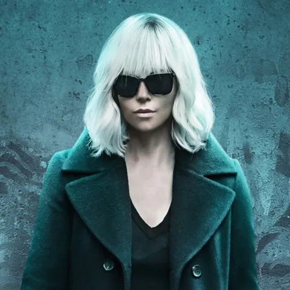
raw/cand_023_v04_1904x1088.png.txt 2 KB# cand_023_v03_3840x2194.png ## Provenance query : Furiosa Mad Max Fury Road movie still source : ddg page_title : Mad Max Director Teases New Furiosa Story Set After Fury Road page_url : https://movieweb.com/mad-max-new-furiosa-story-after-fury-road/ image_url : https://static1.moviewebimages.com/wordpress/wp-content/uploads/2024/05/furiosa-mad-max-fury-road.jpg og_title : Mad Max Director Teases New Furiosa Story Set After Fury Road og_description : George Miller teases another Furiosa film, set after Fury Road, exploring the character's time as a leader. meta_description : George Miller teases another Furiosa film, set after Fury Road, exploring the character's time as a leader. alt_text : Imperator Furiosa in Fury Road and the prequel, Furiosa: A Mad Max Saga. ## Description subject : a woman with a platinum-blonde bob haircut and dark sunglasses, wearing a long dark green trench coat over a black dress subject_type : person subject_identity : Lorraine Broughton, played by Charlize Theron work : Atomic Blonde work_type : film year : 2017 creator : David Leitch (director) scene : Promotional key art of Lorraine Broughton walking toward camera against a graffiti-covered Cold War-era wall. action : Walking directly toward camera, holding a pistol down at her side in one hand, other hand in coat pocket. wardrobe : Long double-breasted dark green wool trench coat, black v-neck dress underneath, black fishnet stockings, black knee-high leather boots, dark sunglasses. props : A silenced/suppressed handgun held in her right hand. setting : Gritty urban wall covered in graffiti and a torn poster reading '11. Oktober '89', evoking late-1980s Berlin. lighting : Cool teal-cyan rim and ambient lighting with deep shadows, high-contrast moody cold tone. palette : Teal, cyan, black, dark green, muted grey camera : Medium-full shot, straight-on, slightly low angle, subject centered confidence : high notes : The web hint (Furiosa/Mad Max) is incorrect -- this is clearly promotional key art for Atomic Blonde (2017) starring Charlize Theron, identifiable by the platinum bob, sunglasses, green trench coat, fishnet stockings, gun, and the '11. Oktober '89' Berlin Wall reference in the background graffiti.
prompts/cand_023_v01_vid04_ref.txt 7 KBsubject_definitions: <Subject 1> is Lorraine Broughton, played by Charlize Theron as the MI6 agent in Atomic Blonde (2017), whose appearance and identity come from <Picture 2> and whose scene placement comes from <Picture 1>, with her recognisable South African facial features (Charlize Theron is from South Africa), extremely defined high cheekbones, striking ice-blue eyes, a long elegant face and jawline, an aquiline nose, short platinum blonde hair cropped close at the sides and slightly longer on top, her signature white patent leather John Galliano signature white vinyl trench coat with deep lapels and large black buttons, a black high-waisted pencil skirt, a black sleeveless sweater top, black thigh-high Stuart Weitzman Lowland thigh-high boots, a black leather Dior belt, a long black wool Max Mara or Burberry trench worn underneath the white coat, black fingerless gloves, and a SIG Sauer P226 handgun held in a marksman's two-handed grip. <Subject 2> is the miniature bar environment in <Picture 1>, a warmly lit interior with amber bottles, brass beer taps, a dark wood counter, a green tufted armchair, a glass side table, and a glowing "ROLIFE BAR" sign on the brick wall. <Picture 1> is the first frame of [Shot 1], showing <Subject 1> already standing in <Subject 2>. <Picture 2> is the identity anchor for <Subject 1>, an original film still of Charlize Theron as Lorraine Broughton from Atomic Blonde (2017), defining her exact facial features, bone structure, platinum hair, and distinctive designer wardrobe described above. The actress's face from <Picture 2> must remain locked onto the character throughout every shot of the video — her extremely defined high cheekbones, piercing ice-blue eyes, long face and defined jawline, and short platinum blonde crop must be recognisable in every camera angle. summary: [keyframe completion + reference generation] The target video begins from <Picture 1>, showing Charlize Theron as Lorraine Broughton, MI6 agent from Atomic Blonde (2017), standing in the miniature bar, and uses <Picture 2> to lock her facial identity in every frame. She clears the room with her SIG Sauer P226 through four quick cuts with jump cuts and atmospheric gunsmoke, announcing her name and film, and ends on a tense final reload. retention_analysis: <Subject 1> (appears in [Shot 1], [Shot 2], [Shot 3], [Shot 4]): fully_preserved - Lorraine Broughton's identity as played by Charlize Theron, her exact facial features and bone structure from <Picture 2>, her short platinum blonde cropped hair, white patent leather John Galliano signature white vinyl trench coat with large black buttons, black high-waisted pencil skirt, black sleeveless sweater, black thigh-high Stuart Weitzman Lowland thigh-high boots, black fingerless gloves, and SIG Sauer P226 handgun are all retained without drifting. <Subject 2> (appears in [Shot 1], [Shot 2], [Shot 3], [Shot 4]): fully_preserved - the miniature bar's amber bottles, brass taps, wood counter, green armchair, and "ROLIFE BAR" sign are retained. <Picture 1> ([Shot 1] first frame): fully_preserved - the shot opens exactly on the composited still, with Lorraine's position, pose, and the bar layout intact. <Picture 2> (identity anchor for <Subject 1>): fully_preserved - Charlize Theron's distinctive South African facial features, extremely defined high cheekbones, piercing ice-blue eyes, long elegant face and jawline, aquiline nose, and short platinum blonde crop are carried into every shot without drifting, in every camera angle and under every lighting change. detailed_description: The target video is in a live-action, cinematic cold-war spy-thriller style with warm practical lighting and slight film grain, matching the stylised 1980s neon-noir aesthetic of Atomic Blonde. [Shot 1] The shot begins from <Picture 1>: a medium shot frames <Subject 1>, Charlize Theron as Lorraine Broughton from Atomic Blonde, with her distinctive extremely defined high cheekbones, piercing ice-blue eyes, long face with a strong jawline, aquiline nose, and short platinum blonde hair cropped close at the sides, standing behind the dark wood counter of <Subject 2>, the miniature bar with its brass taps, stacked amber bottles, green tufted armchair, and the glowing "ROLIFE BAR" sign on the brick wall. Her face matches <Picture 2> exactly — the same cold, calculating expression from the 1989 Berlin-set film. She lowers the dark aviator sunglasses on a finger and levels her SIG Sauer P226 across the room in a marksman's two-handed grip, the white patent leather John Galliano trench coat framing her shoulders with its oversized lapels and large black buttons visible. The ice-cold MI6 spy with a low, clipped voice (S1) says: <d>[English] Lorraine Broughton. MI6. Let's get this over with.</d> The camera holds a static shot with small amplitude as the neon glow of the "ROLIFE BAR" sign casts a warm red light across the white patented leather. [Shot 2] At 00:03.000, the camera cuts to a wide pull-out with large amplitude at fast speed, revealing the full miniature bar interior as <Subject 1> pivots and spins in a full circle, the white trench flaring like a cape, the white patent leather trench coat flaring dramatically, the large black buttons catching the light, the thumb-high Stuart Weitzman Lowland thigh-high boots pivoting on the floorboards as the SIG Sauer tracks the room. Her face remains clearly that of Charlize Theron from <Picture 2> — those extreme high cheekbones and ice-blue eyes unforgettable even in the spin. [Shot 3] At 00:06.000, the camera cuts to a low-angle shot behind the stools as <Subject 1> slides to one knee, the white trench coat sweeping the floorboards, and fires two controlled shots — muzzle flash strobes bright in the dim bar, spent brass spins through the air, bottles detonate in sprays of glass and amber liquid, and smoke wreathes the counter as a knocked-over lamp spills flame across a pool of liquor, neon light from the sign flickering across the white coat as the white coat. The camera trucks left with medium amplitude at normal speed. In the close framing her facial features match <Picture 2> exactly: those extraordinary high cheekbones, ice-blue eyes, the long elegant face with defined jaw, and short platinum crop of Charlize Theron. [Shot 4] At 00:09.000, the camera cuts to a close side profile of <Subject 1>'s face and shoulders as she drops the empty magazine, slaps in a fresh one with the ease of a professional spy, and the ice-cold operative (S1) adds: <d>[English] Sorry, the first round's on me.</d> The camera arcs around her with small amplitude at slow speed, ending on an over-the-shoulder shot down her SIG Sauer sights as flame and smoke fill the background behind the white patent leather trench. Her unmistakable face — Charlize Theron's platinum crop, defining high cheekbones, and ice-blue eye — remains clear to the final frame. overall_soundscape: Her patent leather trench coat swishes as she spins, the Stuart Weitzman Lowland thigh-high boots scuff the wooden floorboards, and rapid SIG Sauer P226 shots crack across the bar with bright muzzle flash pops. Brass clinks on the floor as the magazine drops, glass shatters in wet bursts, and liquor-fed flame crackles low in the background. Low 1980s Berlin nightclub room ambience continues underneath throughout. non_diegetic_music: Cold, tense synthwave bassline with a driving beat, sparse piano stabs, and a filtered electronic pulse, building through the cuts, with a percussive swell locked to the gunfire and cutting out abruptly at her final one-liner, holding silence on the reload — evoking the New Order and 80s soundtrack from Atomic Blonde.
The full toolchain behind this run — every step above is driven by a local agent talking to local models and local tools.
| Piece | What it did |
|---|---|
| Hermes Agent | The operator. Researched and ranked reference stills, wrote every prompt, ran the ComfyUI jobs, judged the results, built the compilations, and wrote this page. Human stays in the loop at every gate. |
| DeepSeek V4 Flash 0731 | The LLM inside the agent — served by the NOUS platform. All the searching, scoring, prompt-writing and judging ran on this model. |
| ComfyUI | Hosted the edit and video workflows. Qwen-Image-Edit 2511 for the composites, MiniMax H3 for the motion. |
| Qwen-Image-Edit 2511 | Placed each heroine into the miniature bar plate at the locked recipe. |
| MiniMax H3 (local) | Image-to-video / reference-to-video at 1344×768, 24fps, 243 frames per clip — picture and sound generated together on an RTX 5090. |
| ffmpeg | The edit bay. Five 10.125s clips joined with a chained xfade — a 12-frame (0.5s) cross-dissolve at each seam, audio crossfaded alongside video, 48.72s total at 1344×768. |
| Python + Pillow | Contact sheets for the selection gates, QC frame extraction, and the versioned stills used in this page. |